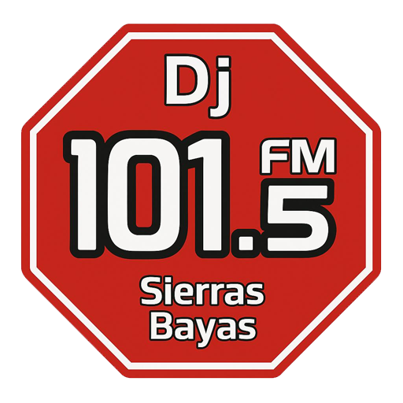

<header class="site-header">
    <div class="logo">
      
      RADIO DJ 101.5
    </div>

  
    <!-- 1a. Burger toggle button -->
    <button id="menu-toggle" class="menu-toggle" aria-label="Abrir menú">
      &#9776;
    </button>
  
    <!-- 1b. Wrap both navs -->
    <div class="nav-menu">
      <nav class="nav-left">
        <a href="index.html">INICIO</a>
        <a href="nosotros.html">NOSOTROS</a>
        <a href="#">PROGRAMACIÓN</a>
      </nav>
      <nav class="nav-right">
        <a href="#">NOTICIAS</a>
        <a href="contacto.html">CONTACTO</a>
      </nav>
    </div>
  </header>  